TÀI LIỆU NỘI BỘ · DÀNH CHO NGƯỜI QUẢN TRỊ NỘI DUNG
Hướng dẫn đăng & sửa nội dung website TOP WELL TEA
Tài liệu từng bước, có hình minh họa, dành cho người không có chuyên môn kỹ thuật: sửa chữ và ảnh trên các trang, quản lý sản phẩm, viết bài Blog, xử lý đơn hàng và thanh toán chuyển khoản.
Trang quản trị
http://localhost:1340/admin (khi đưa lên mạng sẽ đổi sang địa chỉ thật, ví dụ https://cms.topwelltea…/admin)
Website
http://localhost:3010
Ngôn ngữ
Tiếng Việt
Phiên bản
Tháng 10/2026
Mục lục
0Những điều cần biết trước
1Đăng nhập
2Màn hình chính
3Tìm đúng chỗ cần sửa
4Sửa chữ trên một trang
5Các "khối nội dung" của trang
6Thêm, xoá, sắp xếp khối
7Thay ảnh
8Nội dung riêng cho điện thoại
9Lưu và Xuất bản
10Quản lý sản phẩm
11Viết bài Blog
12Menu, chân trang, thông tin chung, icon
13Cài đặt cửa hàng & QR thanh toán
14Xử lý đơn hàng (thanh toán thủ công)
15Lời nhắn liên hệ & người đăng ký nhận tin
16Thư viện ảnh (Media Library)
17Đổi mật khẩu
18Lỗi thường gặp & cách xử lý
19Danh sách kiểm tra trước khi xuất bản
0. Những điều cần biết trước
Website TOP WELL TEA gồm 2 phần:
Website – trang khách hàng nhìn thấy và đặt mua trà.
Trang quản trị (gọi tắt là "Admin", phần mềm tên Strapi) – nơi bạn đăng nhập để sửa chữ, thay ảnh, thêm sản phẩm, viết bài và xử lý đơn hàng. Mọi thứ sửa ở Admin sẽ hiện lên Website ngay sau khi bấm Xuất bản (tải lại trang web là thấy).
4 khái niệm quan trọng
Khái niệm
Giải thích dễ hiểu
Lưu (nút Lưu)
Cất bản nháp lại. Khách chưa nhìn thấy thay đổi này. Giống như bấm "Lưu" trong Word.
Xuất bản (nút Xuất bản)
Đưa nội dung lên website cho khách xem. Chỉ khi bấm Xuất bản thì website mới thay đổi.
Khối nội dung (section)
Mỗi trang được xếp từ nhiều khối chồng lên nhau: banner, câu chuyện thương hiệu, sản phẩm nổi bật… Bạn sửa chữ/ảnh trong từng khối, thêm, xoá hoặc đổi thứ tự khối.
Bản điện thoại
Một số ô có thêm bản "… trên mobile" (ngắn gọn hơn cho màn hình điện thoại). Để trống thì điện thoại dùng nội dung bản máy tính. Xem mục 8.
Từ điển các nút tiếng Anh bạn sẽ gặp
Admin phần lớn là tiếng Việt, nhưng một số nút vẫn là tiếng Anh:
Chữ trên nút
Nghĩa
Chữ trên nút
Nghĩa
Create new entry
Tạo mục mới
Quay lại
Về danh sách
Add an entry
Thêm một dòng / thẻ
Add a component to…
Thêm một khối
Xóa / 🗑
Xoá
⠿ (6 chấm)
Kéo để đổi vị trí
DRAFT
Bản nháp (đang sửa)
PUBLISHED
Bản đang hiện trên web
Browse
Chọn ảnh có sẵn
Add more assets
Tải thêm ảnh từ máy
Hoàn tất
Xong / xác nhận
Hủy
Huỷ
Add or create a relation
Chọn mục liên kết (danh mục, cách pha…)
No entry yet. Click to add one.
Đang trống, bấm để thêm
Unpublish
Gỡ khỏi web (ẩn)
Bộ lọc / Search
Lọc / tìm kiếm
⚠ Những mục KHÔNG nên đụng vào
Ở thanh icon bên trái có Content-Type Builder (hình bố cục), Deploy (đám mây), Chợ ứng dụng (giỏ hàng) và Cài đặt (bánh răng). Đây là phần kỹ thuật – không bấm vào để tránh làm hỏng cấu trúc website. Trong danh sách nội dung, mục User cũng không dùng tới.
1. Đăng nhập
Mở trình duyệt (Chrome, Safari, Edge…), gõ địa chỉ trang quản trị vào thanh địa chỉ rồi nhấn Enter. Nếu giao diện đang là tiếng Anh, chọn Tiếng Việt ở góc trên bên phải.
Nhập Email được cấp.
Nhập Mật khẩu.
Bấm Đăng nhập.
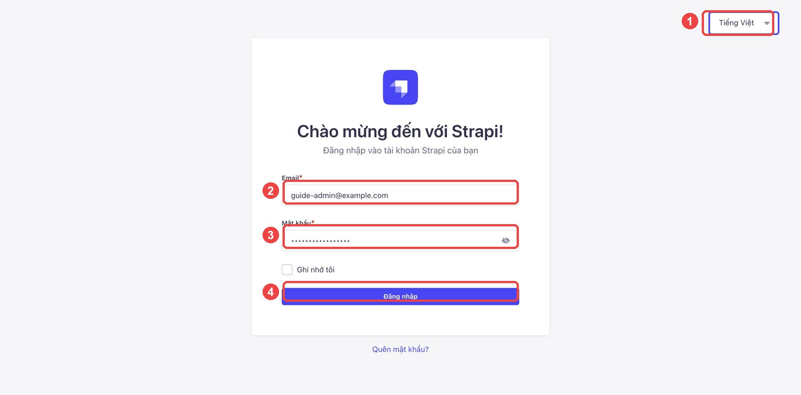
Màn hình đăng nhập
💡 MẹoTick Ghi nhớ tôi để không phải đăng nhập lại mỗi ngày trên máy của bạn. Không tick trên máy dùng chung.
ℹ Quên mật khẩu?Bấm Quên mật khẩu? dưới nút đăng nhập, hoặc nhờ người quản trị chính cấp lại.
2. Màn hình chính
Sau khi đăng nhập, bạn thấy trang chào mừng với danh sách nội dung vừa sửa và vừa xuất bản. Thanh icon bên trái là menu chính:
1Content Manager (cây bút) – nơi sửa toàn bộ nội dung website. Bạn sẽ dùng mục này 95% thời gian.
2Media Library (khung ảnh) – kho ảnh, icon, logo.
3Avatar của bạn (góc dưới) – hồ sơ, đổi mật khẩu, đăng xuất.
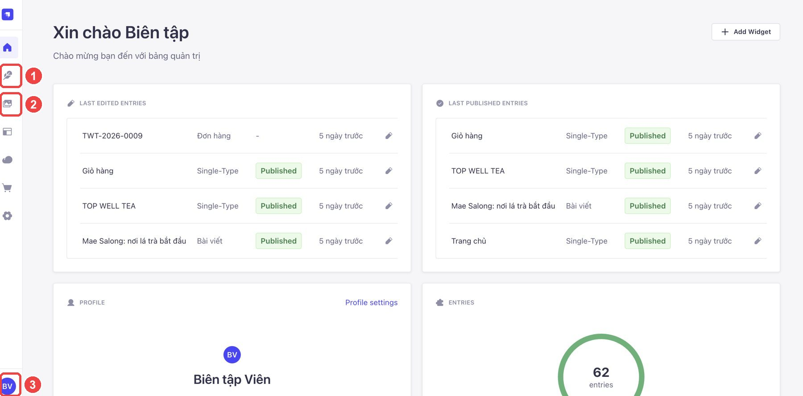
Màn hình chính sau khi đăng nhập
3. Tìm đúng chỗ cần sửa
Bấm Content Manager. Cột bên trái chia làm 2 nhóm:
1COLLECTION TYPES – các danh sách nhiều mục: Sản phẩm, Bài viết, Đơn hàng, Lời nhắn liên hệ…
2SINGLE TYPES – mỗi mục là một trang hoặc một phần chung của website: Trang chủ, Về chúng tôi, Footer, Cài đặt cửa hàng…
3Create new entry – tạo mục mới trong danh sách đang mở.
4Kính lúp / Bộ lọc – tìm nhanh một mục.
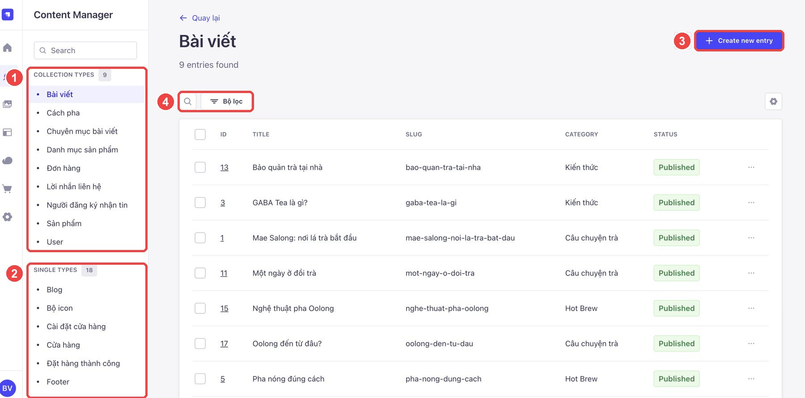
Content Manager – danh sách Bài viết
Bảng tra: muốn sửa phần nào trên website thì vào đâu?
Trên website
Vào mục (Content Manager)
Trang chủ /
Trang chủ
Cửa hàng /cua-hang
Cửa hàng (banner, bộ lọc) – sản phẩm lấy từ Sản phẩm
Trang một sản phẩm
Sản phẩm → chọn sản phẩm. Chữ dùng chung mọi trang sản phẩm (nút "Thêm vào giỏ", tiêu đề "Sản phẩm liên quan"…): Trang chi tiết sản phẩm (chung)
Về chúng tôi /ve-chung-toi
Về chúng tôi
Blog /blog và từng bài
Blog (trang danh sách) · Bài viết (từng bài) · Trang chi tiết bài viết (chung)
Liên hệ /lien-he
Liên hệ
Giỏ hàng · Thanh toán · Đặt hàng thành công
Giỏ hàng · Thanh toán (cả phương thức thanh toán) · Đặt hàng thành công
Tra cứu đơn · Tìm kiếm · Trang 404
Tra cứu đơn hàng · Tìm kiếm · Trang 404
Menu trên cùng, menu điện thoại
Header & menu
Chân trang
Footer
Logo, tên, hotline, email, địa chỉ, mạng xã hội, SEO mặc định
Thông tin chung
Các icon nhỏ (menu, giỏ hàng, mũi tên…)
Bộ icon
Phí ship, mẫu email, ảnh QR thanh toán, chữ thông báo
Cài đặt cửa hàng
Danh mục sản phẩm · Cách pha · Chuyên mục bài viết
Danh mục sản phẩm · Cách pha · Chuyên mục bài viết
2Các ô chữ: dòng chữ nhỏ phía trên, tiêu đề, nội dung…
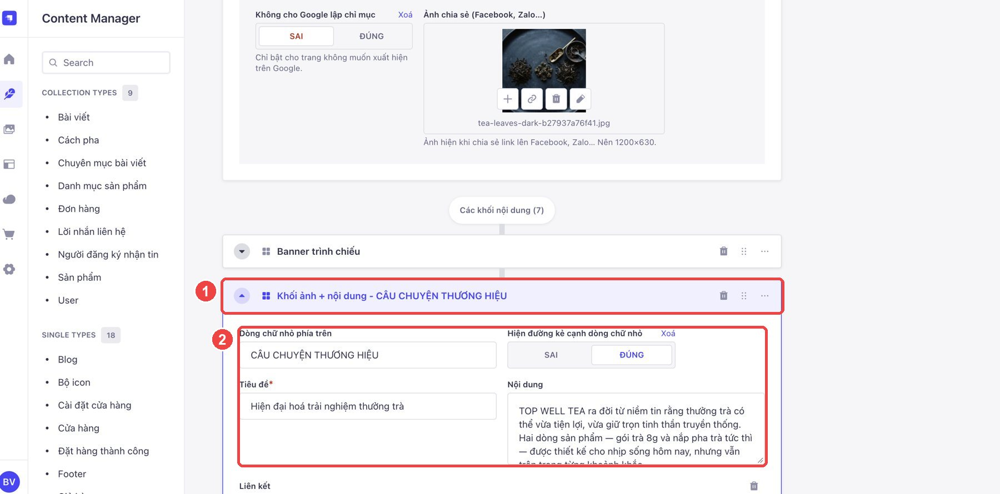
Một khối đã mở
Các ô thường gặp trong một khối
1Liên kết (nút / chữ "TÌM HIỂU THÊM"): Nhãn là chữ hiển thị, Đường dẫn (URL) là trang sẽ mở. Trang trong website ghi dạng /cua-hang; trang ngoài ghi đầy đủ https://….
2Nhãn trên mobile – chữ ngắn hơn cho điện thoại (để trống = dùng chữ bản máy tính).
3Ẩn trên mobile – chọn ĐÚNG nếu không muốn mục này hiện trên điện thoại.
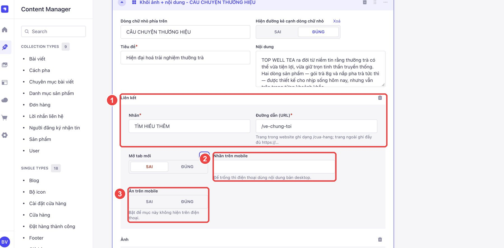
Liên kết và các tuỳ chọn cho điện thoại
Các loại khối có sẵn
Tên khối
Dùng để
Banner trình chiếu
Banner lớn đầu Trang chủ, nhiều slide tự chuyển (đặt số giây ở ô "Tự chuyển slide sau").
Banner trang
Ảnh + tiêu đề đầu các trang con (Cửa hàng, Blog, Liên hệ…).
Khối ảnh + nội dung
Ảnh một bên, chữ một bên. Chọn vị trí ảnh, màu nền, bố cục.
Triết lý thương hiệu · Quy trình (Từ lá đến tách)
Các khối riêng của Trang chủ.
Sản phẩm nổi bật
Chọn các sản phẩm muốn giới thiệu ở Trang chủ.
Ảnh toàn khổ · Trích dẫn
Một ảnh rộng hết màn hình · một câu trích dẫn lớn.
Kêu gọi hành động
Dải tiêu đề + nút (ví dụ "Khám phá bộ sưu tập").
Lưới thẻ · Câu hỏi thường gặp · Đăng ký nhận tin
Các thẻ có icon · danh sách hỏi đáp · ô đăng ký email.
6. Thêm, xoá, sắp xếp khối
Thêm khối mới
Kéo xuống cuối danh sách khối, bấm Add a component to Các khối nội dung. Bảng Pick one component hiện ra. Nhóm Home là các khối riêng của Trang chủ.
Nhóm Sections là các khối dùng chung cho mọi trang (Banner trang, Khối ảnh + nội dung, Trích dẫn…). Bấm vào khối cần thêm – khối mới xuất hiện ở cuối trang, điền nội dung rồi kéo ⠿ lên đúng vị trí.
Đổi ý thì bấm Đóng.
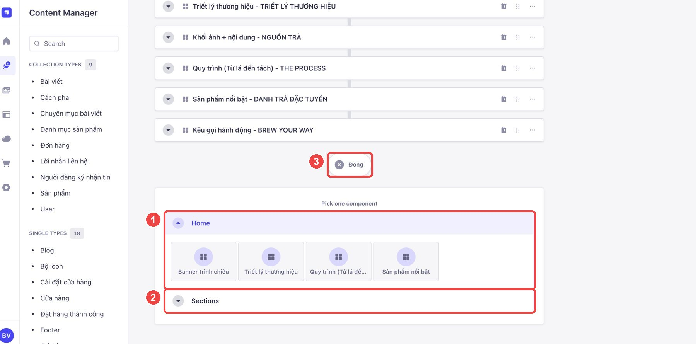
Chọn loại khối muốn thêm
Xoá và sắp xếp
Xoá: bấm 🗑 ở dòng khối đó. Khối chỉ thật sự mất khỏi web sau khi Lưu + Xuất bản.
Đổi thứ tự: giữ ⠿ rồi kéo, hoặc dùng ⋯ → chuyển lên / xuống.
Danh sách bên trong một khối (các slide, các thẻ, các câu hỏi…) cũng thêm bằng Add an entry, xoá bằng 🗑 và kéo ⠿ y như vậy.
⚠ Lỡ tay xoá?Nếu chưa bấm Lưu, chỉ cần rời trang và chọn không lưu (hoặc tải lại trang) – nội dung cũ vẫn còn nguyên.
7. Thay ảnh
Mọi ô ảnh đều có 4 nút nhỏ khi rê chuột vào ảnh:
1+ chọn / tải ảnh khác · 🔗 sao chép link ảnh · 🗑 bỏ ảnh · ✏ sửa thông tin hoặc cắt ảnh.
2Mô tả ảnh (alt) – mô tả ngắn nội dung ảnh, giúp Google hiểu ảnh và hỗ trợ người khiếm thị. Nên luôn điền.
3Tuỳ chọn trình bày của khối: vị trí ảnh (trái/phải), bố cục, màu nền, cỡ tiêu đề.
4Các ô "… trên mobile" của khối (xem mục 8).
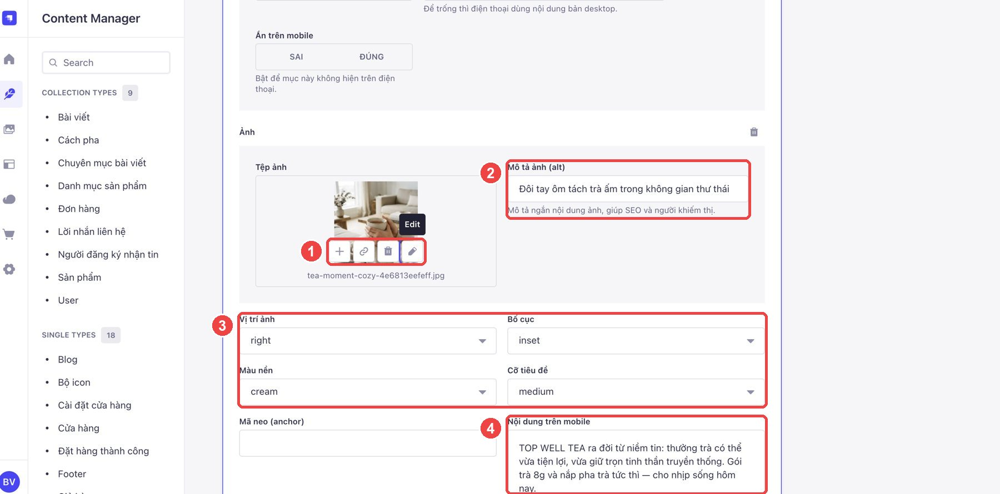
Ô ảnh và các tuỳ chọn của khối
Chọn ảnh có sẵn hoặc tải ảnh mới
Bấm + ở ô ảnh → tab BROWSE hiện toàn bộ ảnh trong thư viện.
Ảnh mới từ máy: bấm Add more assets → chọn file (hoặc kéo thả).
Tick chọn ảnh muốn dùng.
Bấm Hoàn tất.
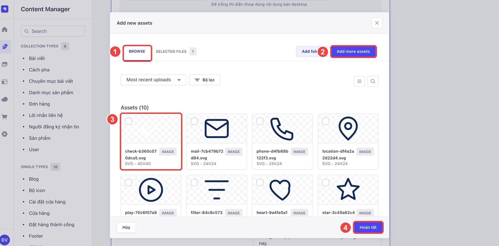
Hộp chọn ảnh
8. Nội dung riêng cho điện thoại
Màn hình điện thoại hẹp nên một số tiêu đề, mô tả cần ngắn hơn bản máy tính. Các ô có chữ "… trên mobile" dùng cho việc này:
1Tiêu đề trên mobile – ví dụ bản máy tính "Hiện đại hoá trải nghiệm thưởng trà", bản điện thoại "Thưởng trà hiện đại".
2Nội dung trên mobile – đoạn văn rút gọn.
3Nút thêm khối nằm ngay dưới khối cuối cùng.
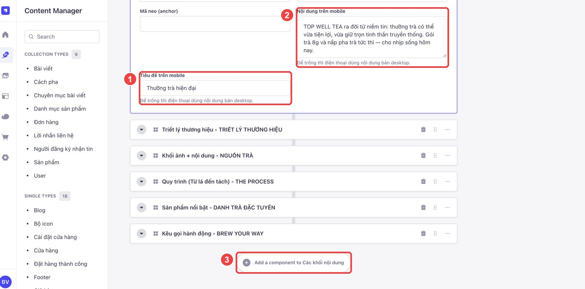
Các ô dành riêng cho điện thoại
Ô
Ý nghĩa
"… trên mobile" (tiêu đề, mô tả, nhãn…)
Điện thoại hiển thị chữ này. Để trống = dùng chữ bản máy tính.
Ẩn trên mobile
Mục không hiện trên điện thoại (ví dụ một link phụ ở chân trang).
Ẩn mô tả trên mobile
Chỉ ẩn phần mô tả, giữ tiêu đề.
Đóng trên mobile (Câu hỏi thường gặp)
Câu hỏi được "Mở sẵn" trên máy tính nhưng đóng lại trên điện thoại.
💡 Kiểm tra trên điện thoạiSau khi xuất bản, mở website bằng điện thoại (hoặc thu nhỏ cửa sổ trình duyệt) để xem tiêu đề có bị xuống quá nhiều dòng không. Nếu có, điền bản ngắn vào ô "… trên mobile".
9. Lưu và Xuất bản
Ngay khi bạn sửa bất kỳ ô nào, hai nút bên phải sáng lên:
Ô vừa sửa.
Xuất bản – đưa thay đổi lên website. Khách thấy ngay (tải lại trang là thấy).
Lưu – chỉ lưu nháp, website chưa đổi. Dùng khi đang sửa dở muốn làm tiếp sau.
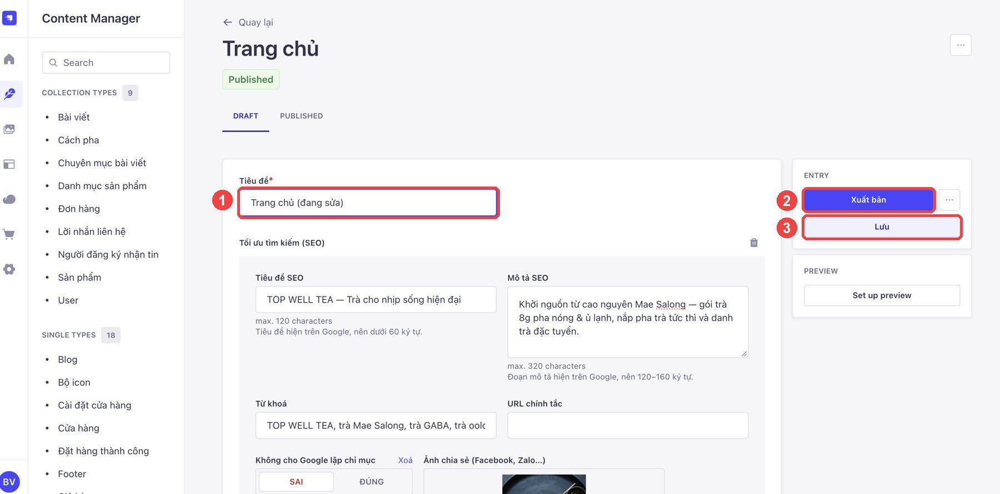
Đã sửa nhưng chưa lưu – hai nút sáng lên
Nhãn trạng thái
Nghĩa
Draft
Chưa từng xuất bản – khách chưa thấy.
Published
Đang hiện trên web, không có thay đổi chờ.
Modified
Đã lưu nháp có thay đổi nhưng chưa xuất bản – web vẫn hiện bản cũ.
ℹ Gỡ một nội dung khỏi webBấm ⋯ cạnh nút Xuất bản → Unpublish. Nội dung vẫn còn trong Admin, chỉ không hiện trên web nữa (dùng cho sản phẩm tạm ngừng bán, bài viết cần sửa lớn).
10. Quản lý sản phẩm
Content Manager → COLLECTION TYPES → Sản phẩm.
1Create new entry – thêm sản phẩm mới.
2Bấm vào một dòng để sửa sản phẩm đó.
3Published = đang bán trên web.
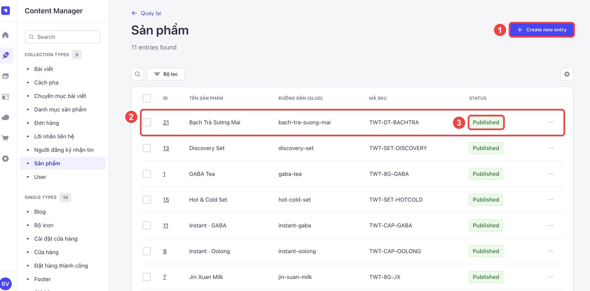
Danh sách sản phẩm
Thông tin cơ bản
1Tên sản phẩm.
2Đường dẫn (slug) – tự tạo từ tên (bấm ⟳ để tạo lại). Chỉ chữ thường không dấu và dấu gạch ngang, ví dụ tra-o-long. Không đổi slug của sản phẩm đang bán vì link cũ sẽ hỏng.
3Danh mục – bấm Add or create a relation để chọn (Gói trà 8g, Nắp pha trà, Combo…).
4Cách pha – chọn một hoặc nhiều (Pha nóng, Ủ lạnh…).
5Giá (₫) – nhập số, không dấu chấm. Ví dụ 145000.
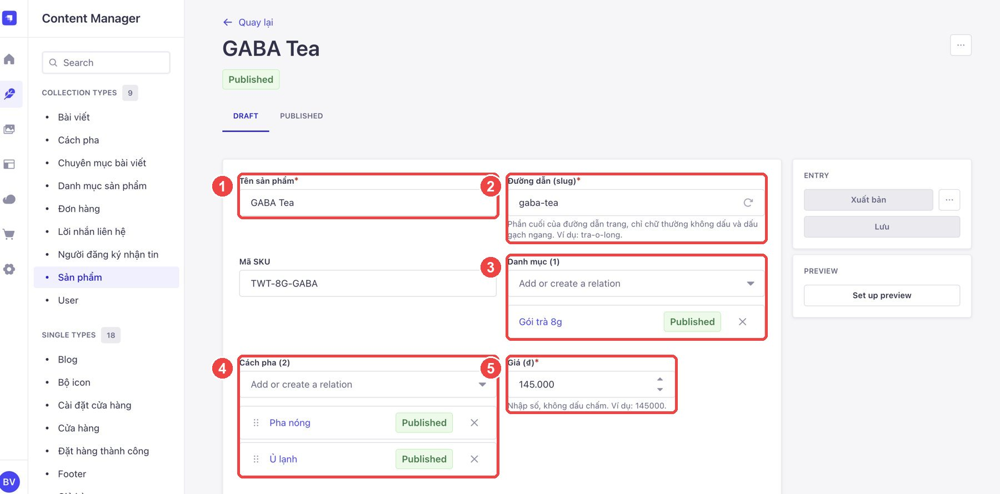
Thông tin cơ bản của sản phẩm
1Còn hàng – chọn SAI khi hết hàng: sản phẩm vẫn hiện nhưng khách không đặt được.
2Mô tả ngắn – đoạn giới thiệu dưới tên sản phẩm.
3Ảnh sản phẩm – danh sách ảnh (ảnh đầu tiên là ảnh đại diện).
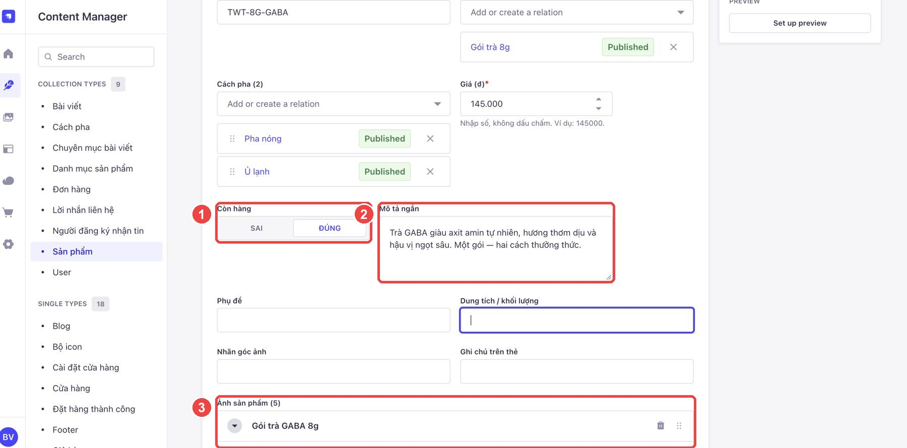
Tình trạng hàng, mô tả, ảnh sản phẩm
1Mỗi dòng là một ảnh, bấm để mở và đổi ảnh / mô tả ảnh. Kéo ⠿ để đổi thứ tự.
2🗑 Bỏ một ảnh.
3Add an entry – thêm ảnh.
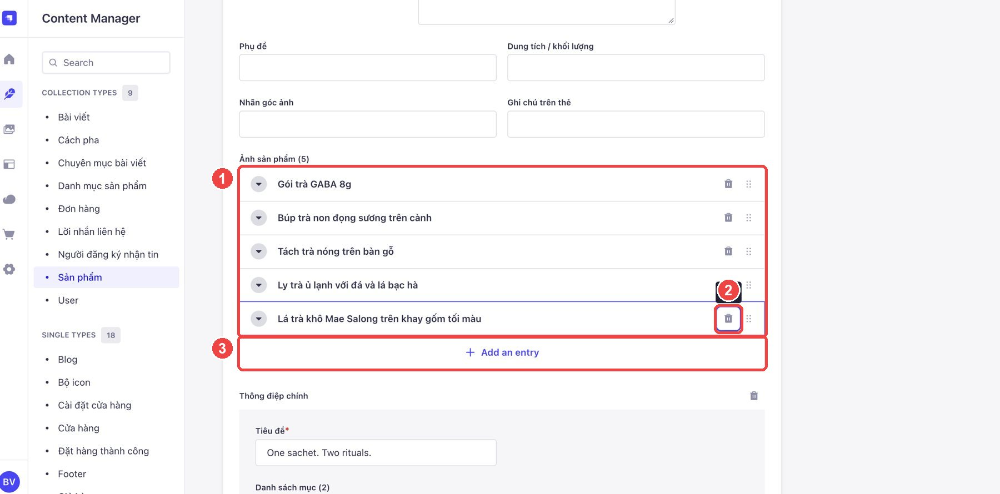
Bộ ảnh của sản phẩm
ℹ Phía dưới cònThông điệp chính, Dòng nổi bật, Thông số (Quy cách, Hương, Vị…) và Các khối chi tiết (Hướng dẫn thưởng trà, Các bước sử dụng, Câu hỏi thường gặp) – sửa giống các khối ở mục 5–6. Sản phẩm muốn hiện ở Trang chủ thì vào Trang chủ → khối Sản phẩm nổi bật → chọn sản phẩm.
11. Viết bài Blog
Content Manager → Bài viết → Create new entry (bài mới) hoặc bấm vào bài cần sửa.
3Tóm tắt – hiện trên thẻ bài ở trang Blog và kết quả Google.
4Ảnh bìa + mô tả ảnh.
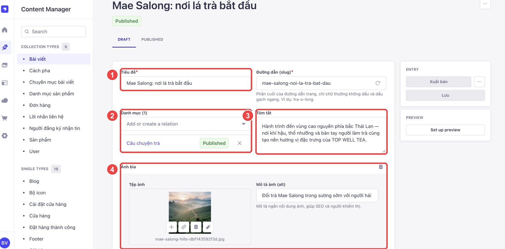
Thông tin bài viết
Viết thân bài trong ô "Nội dung bài viết"
1Thanh công cụ: kiểu đoạn · B đậm · I nghiêng · gạch chân · gạch ngang · mã · 🔗 link · danh sách chấm · danh sách số.
2Vùng soạn thảo – gõ hoặc dán chữ như trong Word.
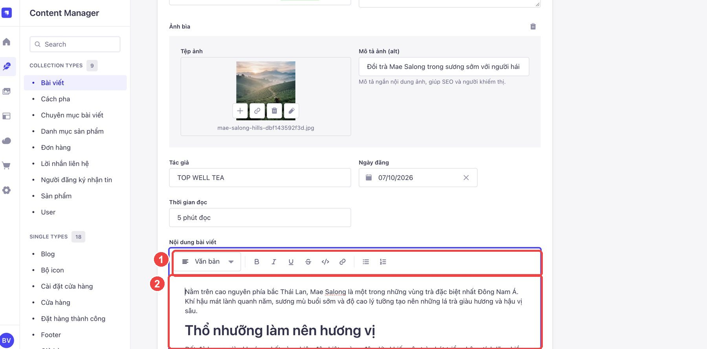
Trình soạn thảo nội dung bài viết
1Đặt con trỏ vào đoạn cần đổi, bấm ô kiểu đoạn (đang ghi "Văn bản").
2Chọn Tiêu đề 2 cho tiêu đề phụ lớn, Tiêu đề 3 cho tiêu đề nhỏ. Kéo xuống còn có Trích dẫn, Ảnh, Danh sách.
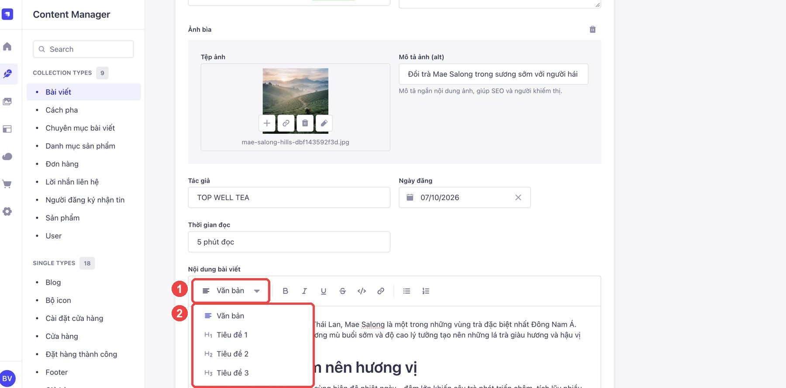
Chọn kiểu đoạn
💡 Viết chuẩn SEOMỗi bài chỉ có một tiêu đề chính (là ô Tiêu đề). Trong thân bài dùng Tiêu đề 2 / Tiêu đề 3 cho các phần, không dùng Tiêu đề 1. Điền Tối ưu tìm kiếm (SEO) ở cuối bài nếu muốn tiêu đề Google khác tiêu đề bài.
Tạo bài mới
Nhập Tiêu đề.
Kiểm tra Đường dẫn (slug) – bấm ⟳ để tạo lại từ tiêu đề.
Điền tóm tắt, chọn danh mục, ảnh bìa, nội dung… rồi bấm Xuất bản (hoặc Lưu để làm tiếp sau).
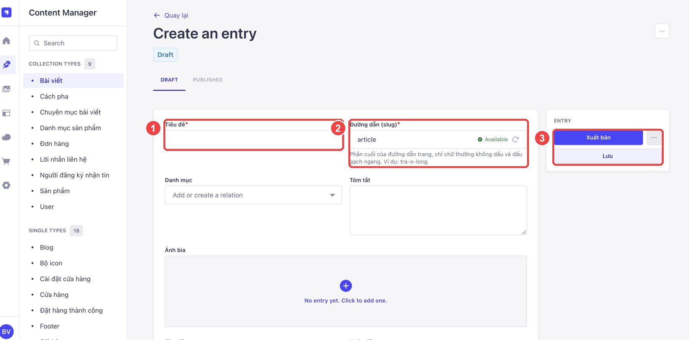
Form tạo bài viết mới
ℹ Bài nổi bậtBật Bài nổi bật = ĐÚNG để bài hiện ở vị trí lớn đầu trang Blog.
12. Menu, chân trang, thông tin chung, icon
Header & menu
1Menu bên trái của logo – mỗi dòng là một mục (nhãn + đường dẫn).
2Menu bên phải của logo.
3Các nhãn nút (tìm kiếm, giỏ hàng…). Kéo xuống còn có phần menu điện thoại (liên kết, nút "Mua trà ngay").
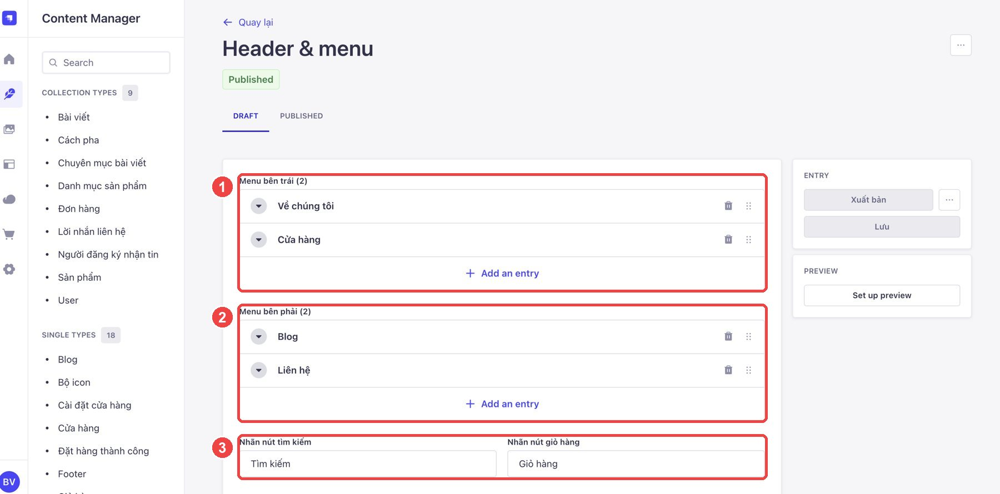
Header & menu
Footer (chân trang)
1Mô tả – đoạn giới thiệu ngắn dưới logo.
2Số cột – các cột liên kết (CỬA HÀNG, KHÁM PHÁ, LIÊN HỆ). Mở một cột để sửa tiêu đề và các link bên trong.
3Dòng bản quyền – {year} tự đổi thành năm hiện tại.
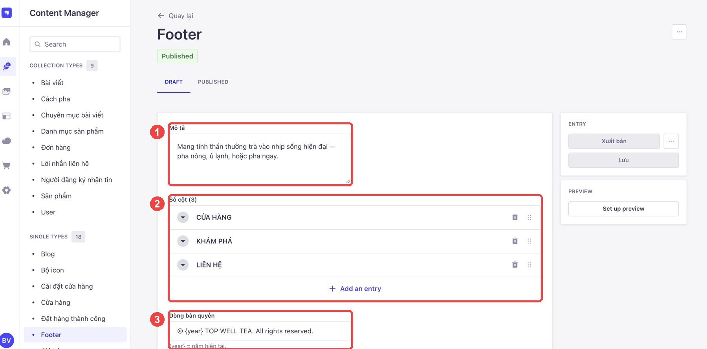
Footer
Thông tin chung
1Tên website và Địa chỉ website (dùng cho SEO, link chia sẻ).
2Logo + mô tả ảnh. Kéo xuống còn Favicon (icon trên tab trình duyệt), hotline, email, địa chỉ, Mạng xã hội và SEO mặc định.
3Khẩu hiệu.
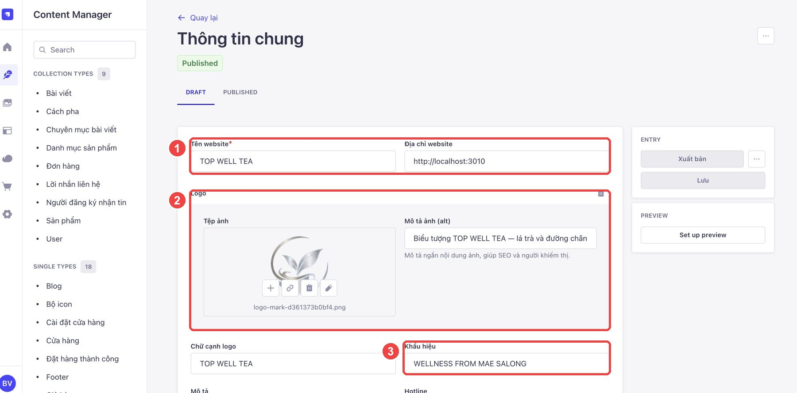
Thông tin chung
Bộ icon
Toàn bộ icon nhỏ của website (menu, đóng, tìm kiếm, giỏ hàng, mũi tên, +/−, ngọn lửa, giọt nước…). Muốn đổi icon: bấm + ở ô icon đó và chọn file SVG mới. Icon tự đổi màu theo nền nên không cần làm nhiều bản màu.
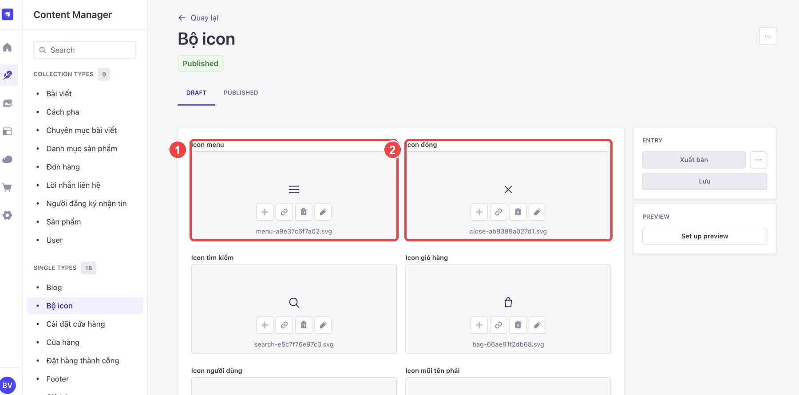
Bộ icon
13. Cài đặt cửa hàng & QR thanh toán
Content Manager → Cài đặt cửa hàng.
1Phí vận chuyển (₫) – phí ship mặc định.
2Miễn phí ship cho đơn từ (₫) – đơn có tạm tính từ số này trở lên được miễn ship.
3Tiền tố mã đơn – mã đơn có dạng TWT-2026-0001.
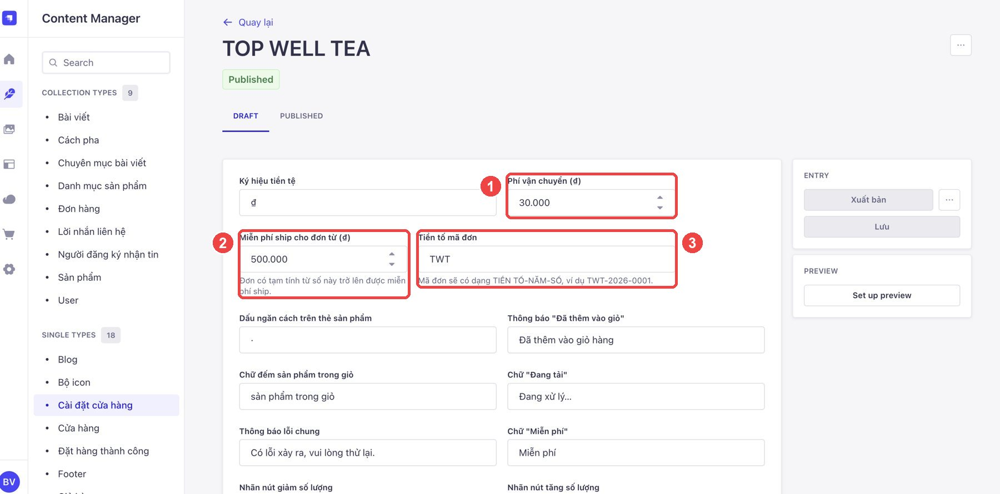
Cài đặt cửa hàng – phần đầu
ℹ Mẫu emailCác ô "Email khách…" dùng biến trong ngoặc nhọn, ví dụ {name} tên khách, {code} mã đơn, {items} danh sách sản phẩm, {total} tổng tiền, {paymentNote} hướng dẫn chuyển khoản. Danh sách biến ghi ngay dưới ô.
Ảnh QR chuyển khoản
Kéo xuống dưới các chữ thông báo trên web (giỏ hàng, lỗi…) và các mẫu email là phần chuyển khoản:
1Chuyển khoản: tiêu đề – dòng hiện trên ảnh QR, ví dụ "Quét mã QR để chuyển khoản".
2Chuyển khoản: ghi chú – {code} tự thay bằng mã đơn để khách ghi vào nội dung chuyển khoản.
3Ảnh QR thanh toán – bấm vào ô và tải lên ảnh QR tài khoản ngân hàng của shop.
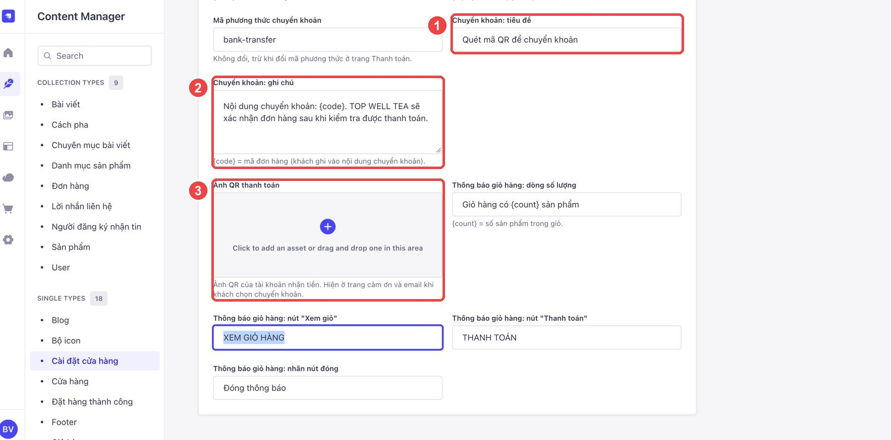
Phần chuyển khoản và ảnh QR
⚠ Kiểm tra QR trước khi xuất bảnDùng app ngân hàng quét thử ảnh QR, đúng tên và số tài khoản của shop rồi mới bấm Xuất bản. Khi chưa có ảnh QR, trang cảm ơn chỉ hiện dòng ghi chú.
14. Xử lý đơn hàng (thanh toán thủ công)
Website không tự động trừ tiền. Khách chọn COD (trả khi nhận hàng) hoặc Chuyển khoản (quét QR, ghi mã đơn vào nội dung). Shop tự kiểm tra và cập nhật trạng thái đơn trong Admin.
1Mã đơn hàng – bấm để mở đơn.
2Trạng thái đơn hàng: pending chờ xử lý · confirmed đã xác nhận · shipping đang giao · completed hoàn tất · cancelled đã huỷ.
3Trạng thái thanh toán: unpaid chưa trả · paid đã trả · refunded đã hoàn tiền.
4Bộ lọc – ví dụ lọc các đơn đang pending.
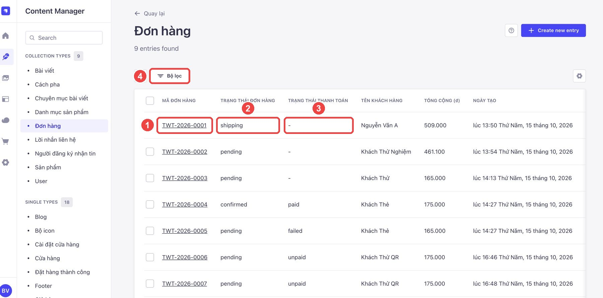
Danh sách đơn hàng
💡 Biết có đơn mớiMỗi đơn mới, website gửi email báo về hộp thư của shop (khi đã cấu hình email) và đơn hiện ở đầu danh sách với trạng thái pending.
1Trạng thái đơn hàng – đổi ở đây (gợi ý thứ tự ngay dưới ô).
2Thông tin khách: tên, email, điện thoại, địa chỉ, ghi chú, phương thức thanh toán, sản phẩm trong đơn.
3Sửa xong bấm Lưu (đơn hàng không có nút Xuất bản).
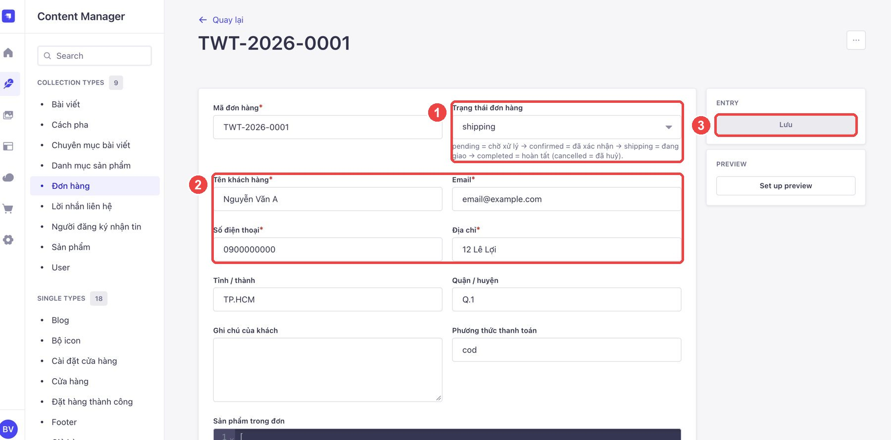
Chi tiết một đơn hàng
1Lịch sử trạng thái – mỗi lần đổi trạng thái, bấm Add an entry, chọn trạng thái mới và thời điểm. Khách thấy các mốc này khi tra cứu đơn.
2Trạng thái thanh toán – đổi sang paid sau khi đã kiểm tra nhận được tiền.
3Mã giao dịch – ghi mã giao dịch ngân hàng để đối soát. Kèm Thời điểm thanh toán.
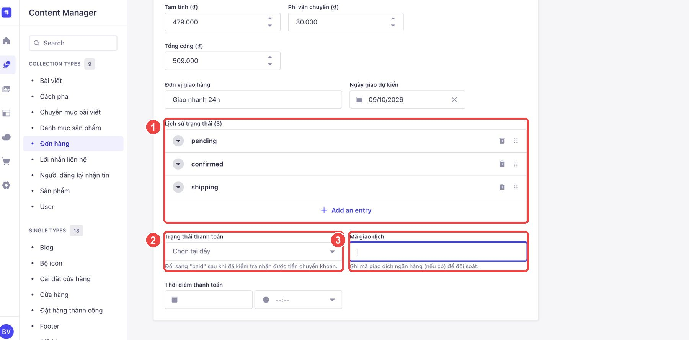
Lịch sử trạng thái và thông tin thanh toán
Quy trình xử lý một đơn
Khi nào
Làm gì trong Admin
Có đơn mới
Gọi / nhắn xác nhận với khách nếu cần. Đơn COD: đổi Trạng thái đơn hàng → confirmed, thêm dòng lịch sử confirmed, Lưu.
Khách chuyển khoản
Mở app ngân hàng, tìm khoản tiền có nội dung = mã đơn và đúng số tiền. Đúng thì: Trạng thái thanh toán → paid, ghi Mã giao dịch + Thời điểm thanh toán, Trạng thái đơn hàng → confirmed, thêm dòng lịch sử, Lưu.
Giao cho đơn vị vận chuyển
Trạng thái đơn hàng → shipping, điền Đơn vị giao hàng và Ngày giao dự kiến, thêm dòng lịch sử shipping, Lưu.
Khách đã nhận hàng
completed (đơn COD: đồng thời đổi thanh toán → paid), thêm dòng lịch sử, Lưu.
Huỷ đơn
cancelled, ghi lý do vào ghi chú của dòng lịch sử. Đã nhận tiền thì hoàn lại cho khách và đổi thanh toán → refunded.
Khách tự xem tiến trình đơn ở trang Tra cứu đơn hàng trên website (nhập mã đơn + email hoặc số điện thoại):
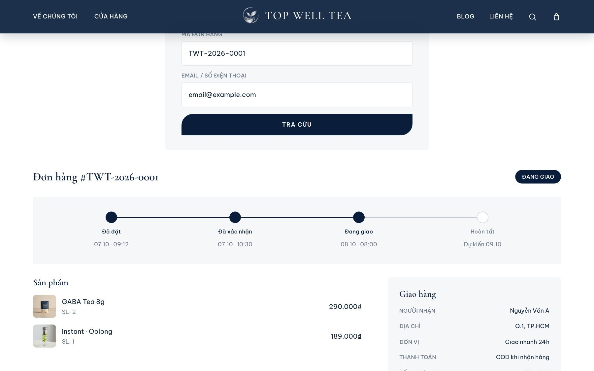
Khách tra cứu đơn trên website – các mốc lấy từ "Lịch sử trạng thái"
15. Lời nhắn liên hệ & người đăng ký nhận tin
Content Manager → Lời nhắn liên hệ: mọi tin nhắn khách gửi từ trang Liên hệ.
1Bấm tên khách để đọc toàn bộ lời nhắn, email, số điện thoại.
2Trạng thái xử lý: new mới · handled đã trả lời. Trả lời khách xong thì mở lời nhắn, đổi sang handled và bấm Lưu.
3Bộ lọc – lọc các lời nhắn chưa xử lý.
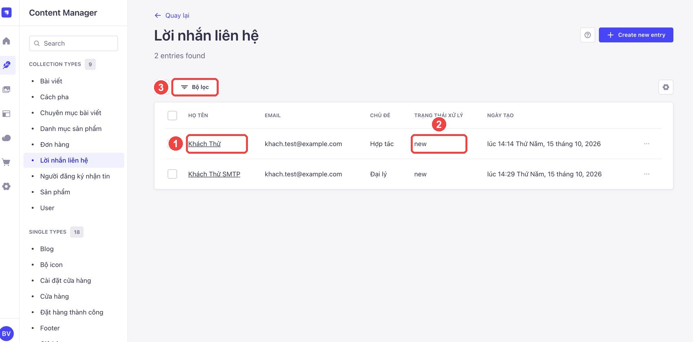
Lời nhắn liên hệ
Mục Người đăng ký nhận tin là danh sách email khách để lại ở ô "Đăng ký nhận tin" (trang Blog, cuối bài viết), kèm trang khách đăng ký. Dùng danh sách này khi gửi bản tin hoặc chương trình ưu đãi.
16. Thư viện ảnh (Media Library)
Bấm icon khung ảnh ở thanh bên trái. Đây là kho chung của mọi ảnh, icon, logo trên website.
1New – tải ảnh lên hoặc tạo thư mục.
2Filter / Search – tìm ảnh theo tên.
3Bấm vào ảnh để xem chi tiết, sửa tên / mô tả, thay file hoặc tải về.
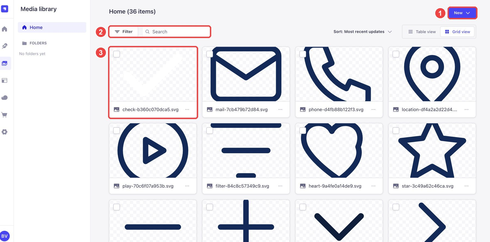
Media Library
1Bấm New.
2File upload – chọn ảnh từ máy (có thể chọn nhiều ảnh một lúc).
3File upload from URL – tải ảnh từ một đường link.
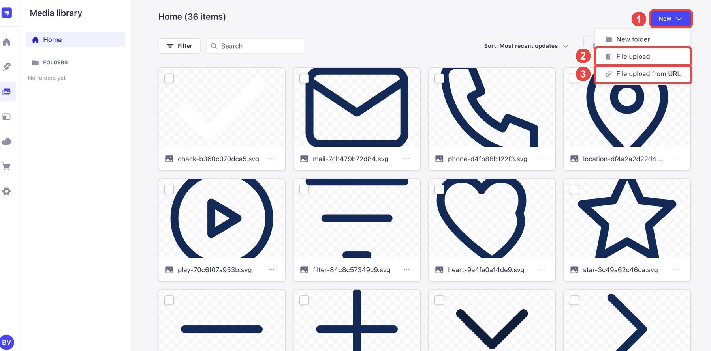
Tải ảnh mới
💡 Kích thước ảnh nên dùngẢnh banner / ảnh lớn: ngang khoảng 1920px. Ảnh sản phẩm: vuông hoặc dọc, khoảng 1200px. Dung lượng nên dưới 1 MB – website tự nén và tạo nhiều cỡ ảnh.
⚠ Không xoá ảnh đang dùngXoá một ảnh trong thư viện sẽ làm nó biến mất ở mọi nơi đang dùng trên website. Muốn đổi ảnh, hãy thay ảnh ở ô ảnh của trang (mục 7) thay vì xoá trong thư viện.
17. Đổi mật khẩu
Bấm avatar ở góc dưới bên trái → Profile settings. Kéo xuống phần Đổi mật khẩu: nhập mật khẩu hiện tại, mật khẩu mới và nhập lại mật khẩu mới.
Bấm Lưu ở góc trên bên phải.
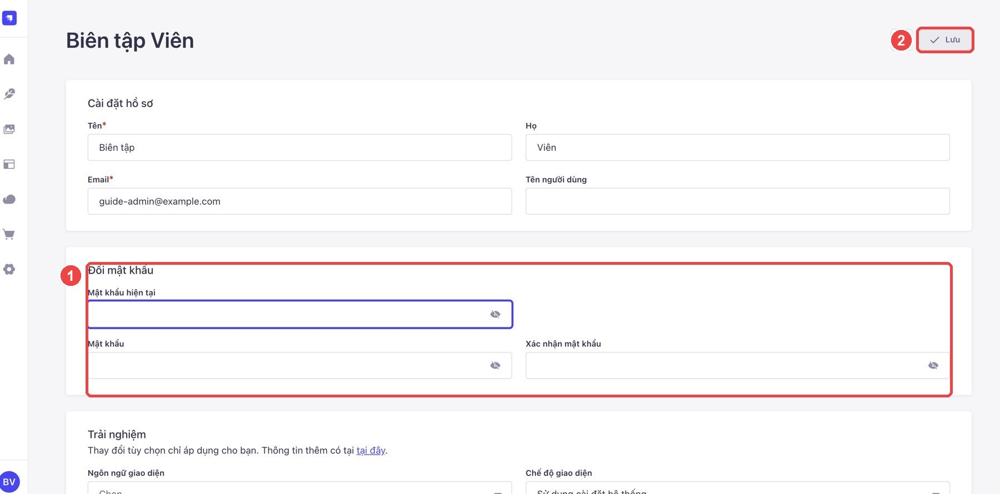
Hồ sơ và đổi mật khẩu
💡 Mật khẩu mạnhÍt nhất 8 ký tự, có chữ hoa, chữ thường và số. Không dùng chung mật khẩu với email hay ngân hàng. Ở phần Trải nghiệm bên dưới có thể đổi ngôn ngữ giao diện Admin.
18. Lỗi thường gặp & cách xử lý
Tình huống
Cách xử lý
Đã sửa nhưng website không đổi
Kiểm tra đã bấm Xuất bản chưa (nhãn phải là Published, không phải Modified). Sau đó tải lại trang web (Ctrl/Cmd + Shift + R). Nếu vẫn chưa đổi, đợi khoảng 1 phút.
Nút Xuất bản báo lỗi đỏ
Có ô bắt buộc (dấu * đỏ) đang trống hoặc sai định dạng. Kéo lên tìm ô có viền đỏ, điền lại.
Slug báo "đã tồn tại"
Đã có sản phẩm / bài viết khác dùng đường dẫn này. Thêm chữ phân biệt, ví dụ tra-o-long-2.
Ảnh không tải lên được
Ảnh quá nặng hoặc sai định dạng. Dùng JPG / PNG / WebP (icon: SVG), dung lượng dưới 5 MB.
Tiêu đề trên điện thoại bị xuống nhiều dòng
Điền bản ngắn vào ô "Tiêu đề trên mobile" của khối đó (mục 8).
Lỡ tay xoá khối / sửa sai
Nếu chưa Lưu: rời trang và chọn không lưu. Nếu đã Lưu nhưng chưa Xuất bản: tab PUBLISHED vẫn giữ bản cũ để chép lại.
Khách không thấy mã QR
Kiểm tra Cài đặt cửa hàng → Ảnh QR thanh toán đã có ảnh và đã Xuất bản.
Khách tra cứu không thấy đơn
Khách phải nhập đúng mã đơn và đúng email hoặc số điện thoại đã đặt hàng.
Hộp "Bạn có chắc chắn muốn rời khỏi trang?"
Bạn có thay đổi chưa lưu. Bấm Hủy để quay lại lưu, hoặc Xác nhận để bỏ thay đổi.
19. Danh sách kiểm tra trước khi xuất bản
Chính tả, dấu tiếng Việt, tên sản phẩm và giá đã đúng.
Mọi ảnh mới đều có Mô tả ảnh (alt).
Ảnh đúng tỉ lệ, không bị mờ hay méo.
Link trong nút / menu mở đúng trang (trang trong website bắt đầu bằng /).
Đã điền Tiêu đề SEO và Mô tả SEO cho trang / sản phẩm / bài viết mới.
Đã xem thử trên điện thoại; tiêu đề quá dài thì điền bản "… trên mobile".
Sản phẩm mới: đã chọn danh mục, cách pha, bật Còn hàng.
Ảnh QR thanh toán đã quét thử đúng tài khoản của shop.